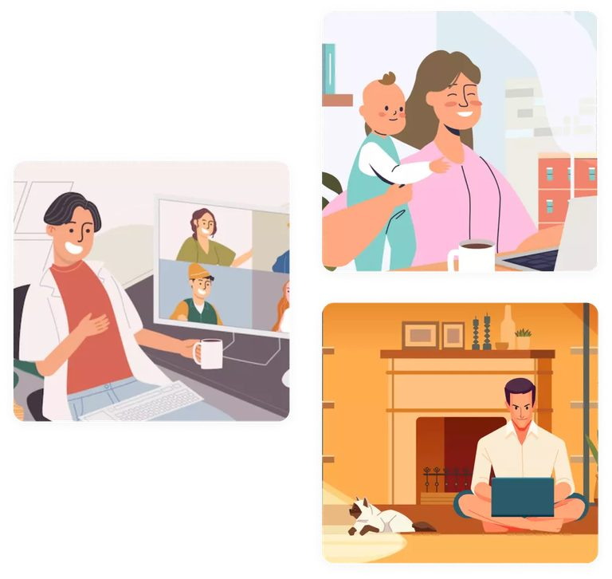

Найдите удаленную работу своей мечты в лучших компаниях! Более тысячи удаленных вакансий в самых различных профессиях. Сделайте следующий шаг в своей карьере!
Работая из офиса, а не удаленно, вы проводите много времени в ужасных пробках и раздражающих поездках в час пик на общественном транспорте. Работая удаленно из дома, вы могли бы потратить это время с большей пользой для себя и своих близких.
Жесткий график
Работая в офисе, а не удаленно, Вы подчиняетесь жесткому графику. Работа начинает управлять вашей жизнью. Работая удаленно, вы сами решаете, когда и сколько времени посвятить удаленной работе. Работая удаленно, вы можете работать из любого места и в любое время!
Недостаточно впечатлений
Работая из офиса, а не удаленно, вы привязаны к определенному месту жительства, и несколько дней отпуска в году не позволяют вам увидеть мир. Работая удаленно, вы можете легко путешествовать когда угодно и куда угодно. Люди, работающие удаленно из дома, предпочитают каждые несколько месяцев работать в другой стране.
Нет времени на семью и друзей
Когда вы работаете из офиса, а не удаленно, у вас остается мало времени на общение с семьей. Это негативно сказывается на вашем психическом здоровье. Вы чувствуете себя виноватым и одиноким. Удаленная работа из дома позволяет вам быть рядом с семьей 24 часа в сутки 7 дней в неделю, не забывая, конечно, о своем личном пространстве.
Пустая трата денег
Вы устали тратить много денег на еду и транспорт в офисе. Ежедневные расходы на офисную работу могут отнимать значительную часть вашего бюджета и лишать вас денег, которые вы могли бы потратить на хобби, развлечения и развитие. Работая удаленно из дома, вы не тратите деньги на проезд до места работы и едите вкусную домашнюю еду.
Как мы помогаем решить эти проблемы и найти Вам лучшую удаленную работу?
Профессиональный профиль
«Удаленка» позволит вам создать профессиональный профиль удаленного работника и сравнить ваше резюме с резюме конкурентов, а также предоставит рекомендации по зарплате на основе ваших знаний, навыков и опыта.
Умный подбор удаленной работы
«Удаленка», благодаря интеллектуальным алгоритмам, подбирает наиболее подходящую для вас удаленную работу, в которой вероятность получения положительного ответа близка к 100%.
Уникальное резюме удаленного работника
«Удаленка» позволяет создать резюме, которое отличает вас от других благодаря проверке знаний и отзывам о вас как о профессионале от ваших друзей, знакомых, бывших коллег и руководителей.

Для тех, кто ищет удаленную работу
Кому это подходит?
Наш сервис поможет вам найти удаленную работу из дома, если вы относите себя к следующим категориям соискателей:
Вы профессионал
Который следит за тенденциями быстро меняющегося мира и хочет построить свою карьеру в качестве удаленного специалиста
У Вас есть маленький ребенок
Вы вышли в декрет, но все равно хотите продолжать работать. Или ваша существующая работа не позволяет больше времени проводить дома с ребенком
Вы подросток или студент
Который хочет совмещать учебу с удаленной работой, чтобы набраться опыта и стать высокооплачиваемым профессионалом
4.6/5В среднем оценивают наш сервис различные удаленные работники
1 000+Вакансий
120+Городов
60+Компаний
30+Категорий
Лучшее решение для поиска удаленных работников
Наш сервис поможет вам найти удаленных работников, если вы относите себя к следующим категориям:
Вы небольшая компания
Которая испытывает трудности с созданием бренда работодателя и привлечением лучших удаленных работников.
Вы крупная компания
Которой необходимо найти хорошего удаленного работника в кратчайшие сроки
Вы находитесь в постоянном поиске
Удаленных работников, способных улучшить работу вашей компании
Вы абсолютно любой бизнес
Который осознал, что нанимать и содержать в штате удаленных работников значительно дешевле и эффективнее!
И получите доступ ко всем возможностям «Удаленки». Чтобы зарегистрироваться, просто оставьте свой корпоративный e-mail и придумайте пароль.
2
Пройдите верификацию
И получите заполненную страницу вашей компании. Наш сервис отвечает высоким стандартам качества, поэтому мы проверяем всех работодателей. В качестве награды за ожидание мы брендируем вашу страницу и добавляем информацию о работодателе (*при условии, что информация о компании доступна в открытых источниках).
3
Создайте свою собственную вакансию
Мы разработали максимально удобный и простой конструктор вакансий. Вам достаточно просто заполнить несколько полей, чтобы начать получать заявки от лучших удаленных специалистов.
4
Выберите пакет услуг
И получите первые заявки в первые 24 часа. Выберите любой из 3 доступных тарифов и начните получать заявки от лучших удаленных кандидатов, а также получите доступ к базе данных пассивных соискателей.